Eclats de vers : Matemat : Triangles
Table des matières
1. Définition
Un triangle est une figure géométrique délimitée par trois segments reliant trois points pour former un circuit fermé. Chaque point du circuit est appelé sommet du triangle, tandis que chaque segment est appelé côté du triangle.

Le schéma ci-dessous représente un exemple de triangle de sommets \(A\), \(B\) et \(C\) délimité par les côtés de longueurs :
\[ a = \abs{BC} \]
\[ b = \abs{CA} \]
\[ c = \abs{AB} \]
On définit généralement un triangle par la liste de ces sommets. Le triangle du schéma ci-dessus est appelé triangle \(ABC\).
2. Classification
2.1. Triangle rectangle
Un triangle rectangle est un triangle dont un des angles est un angle droit.
Le schéma ci-dessous donne un exemple de triangle rectangle :
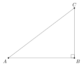
Dans un triangle rectangle :
- le plus long côté est appelé hypothénuse
- les deux autres côtés, appelés cathètes, sont adjacents à l’angle droit
Dans notre schéma, le côté \(c\) est l’hypothénuse, tandis que \(a\) et \(b\) sont les cathètes.
2.2. Triangle isocèle
Un triangle isocèle est un triangle qui possède deux côtés de longueurs égales.
Le schéma ci-dessous donne un exemple de triangle isocèle :
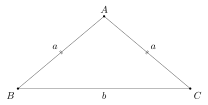
2.3. Triangle équilatéral
Un triangle équilatéral est un triangle dont les trois côtés sont de longueurs égales
Le schéma ci-dessous donne un exemple de triangle équilatéral :
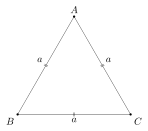
2.4. Triangle acutangle
Un triangle acutangle est un triangle dont tous les angles sont aigus
Le schéma ci-dessous donne un exemple de triangle acutangle :
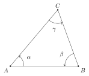
2.5. Triangle obtusangle
Un triangle obtusangle est un triangle dont un des angles est obtus
Le schéma ci-dessous donne un exemple de triangle obtusangle :
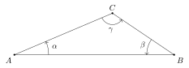
3. Objets géométriques liés au triangle
3.1. Hauteur
Une hauteur est un segment qui part d’un sommet du triangle et qui est perpendiculaire au côté opposé.
Le schéma ci-dessous représente un triangle \(ABC\) et une hauteur \(h\) qui part du sommet \(C\) pour rejoindre perpendiculairement le côté \([A,B]\) :
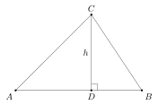
3.1.1. Hauteur extérieure
Dans le cas où la hauteur progresse vers un côté du triangle adjacent à un angle obtus, on est amené à tracer la droite qui prolonge ce côté pour pouvoir construire la hauteur. Le schéma ci-dessous nous en donne un exemple, avec la hauteur \(h\) qui part du sommet \(C\) et progresse vers la droite \(d\) prolongeant le côté \([A,B]\) :
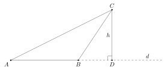
Les points \(A\), \(B\) et \(D\) sont alignés sur la droite \(d\).
3.2. Médiane
Une médiane est un segment qui part d’un sommet du triangle jusqu’au milieu du côté opposé.
Le schéma ci-dessous représente un triangle \(ABC\) et une médiane \(m\) qui part du sommet \(C\) pour rejoindre le milieu \(D\) du côté \([A,B]\) :
On a donc :
\[ \abs{AD} = \abs{DB} \]
3.3. Médiatrice
Une médiatrice d’un triangle est tout simplement la médiatrice d’un des côtés.
Le schéma ci-dessous représente un triangle \(ABC\) et une médiatrice \(m\) qui croise perpendiculairement le côté \([A,B]\) en son milieu :

3.4. Bissectrice
Une bissectrice d’un triangle est une droite qui passe par un de ses sommets et qui coupe l’angle lié à ce sommet en deux parties égales.
Le schéma ci-dessous représente un triangle \(ABC\) et une bissectrice \(b\) qui passe par le sommet \(A\) et coupe l’angle \(\angleflex{BAC}\) en deux angles \(\alpha\) d’amplitudes égales :
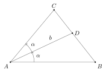
4. Angles
4.1. Somme des angles d’un triangle
La figure ci-dessous représente un triangle \(ABC\), une droite \(a\) qui prolonge le côté \([A,B]\) et une droite \(b\) parallèle à \(a\) :

La notation des angles tient compte de l’égalité des angles alternes-internes formés par les droites \(a\), \(b\), \(c\) et \(d\).
Ce schéma nous montre que les angles \(\alpha\), \(\beta\) et \(\gamma\) forment ensemble un angle plat :
\[ \alpha + \beta + \gamma = 180^\circ \]
Ces trois angles ayant les mêmes amplitudes que les angles internes du triangle \(ABC\), on en déduit que la somme des angles d’un triangle vaut 180°.
4.2. Triangle rectangle

Dans le cas d’un triangle rectangle, un des angles vaut \(\pi/2\) et leur somme s’écrit :
\[ \alpha + \beta + \frac{\pi}{2} = \pi \]
ou encore :
\[ \alpha + \beta = \pi - \frac{\pi}{2} \]
et finalement :
\[ \alpha + \beta = \frac{\pi}{2} \]
Les angles non droits d’un triangle rectangle sont complémentaires.
5. Angle au centre et angle inscrit
5.1. Première disposition
Le schéma ci-dessous représente un cercle \(\mathscr{C}\) de centre \(O\) et de rayon \(r\) :
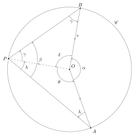
Nous avons tenu compte de la symétrie dans la notation des angles.
Nous allons examiner la relation entre l’angle au centre :
\[ \alpha = \abs{\angleflex{AOB}} \]
et l’angle inscrit :
\[ \beta = \abs{\angleflex{APB}} \]
Les segments \([O,A]\), \([O,B]\) et \([O,P]\) étant des rayons du cercle, on a :
\[ r = \abs{OA} = \abs{OB} = \abs{OP} \]
La somme des angles dans le triangle \(POB\) nous donne :
\[ 2 \ \gamma + \delta = 180^\circ \]
Isolons \(\delta\) :
\[ \delta = 180^\circ - 2 \ \gamma \]
La somme des angles dans le triangle \(PAO\) nous donne :
\[ 2 \ \lambda + \theta = 180^\circ \]
ou encore :
\[ \theta = 180^\circ - 2 \ \lambda \]
Comme les angles \(\alpha\), \(\delta\) et \(\theta\) forment ensemble un tour complet (un angle plein), on a :
\[ \alpha + \delta + \theta = 360^\circ \]
En tenant compte des résultats précédents, cette équation devient :
\[ \alpha + (180^\circ - 2 \ \gamma) + (180^\circ - 2 \ \lambda) = 360^\circ \]
Simplifions les 360° :
\[ \alpha - 2 \ \gamma - 2 \ \lambda = 0 \]
isolons \(\alpha\) :
\[ \alpha = 2 \ \gamma + 2 \ \lambda \]
et mettons les \(2\) en évidence :
\[ \alpha = 2 \ (\gamma + \lambda) \]
Comme :
\[ \beta = \gamma + \lambda \]
cette équation devient :
\[ \alpha = 2 \ \beta \]
L’amplitude de l’angle au centre vaut le double de l’amplitude de l’angle inscrit.
5.2. Deuxième disposition
Le schéma ci-dessous représente un cercle \(\mathscr{C}\) de centre \(O\) et de rayon \(r\) :
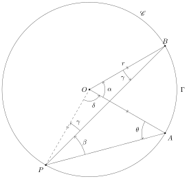
Nous avons tenu compte de la symétrie dans la notation des angles.
Nous allons examiner la relation entre l’angle au centre \(\alpha\) et l’angle inscrit \(\beta\).
Les segments \([O,A]\), \([O,B]\) et \([O,P]\) étant des rayons du cercle, on a :
\[ r = \abs{OA} = \abs{OB} = \abs{OP} \]
Par symétrie dans le triangle \(PAO\), on a aussi :
\[ \theta = \beta + \gamma \]
La somme des angles dans le triangle \(PAO\) nous donne :
\[ \beta + \gamma + \theta + \delta = 180^\circ \]
En tenant compte de la symétrie, cette équation devient :
\[ \beta + \gamma + \beta + \gamma + \delta = 180^\circ \]
ou encore :
\[ 2 \ \beta + 2 \ \gamma + \delta = 180^\circ \]
La somme des angles dans le triangle \(PBO\) nous donne :
\[ 2 \ \gamma + \alpha + \delta = 180^\circ \]
En soustrayant cette dernière équation de la précédente, on obtient :
\[ 2 \ \beta + 2 \ \gamma + \delta - 2 \ \gamma - \alpha - \delta = 0 \]
c’est-à-dire :
\[ 2 \ \beta - \alpha = 0 \]
Isolons \(\alpha\) :
\[ \alpha = 2 \ \beta \]
Ici aussi, l’amplitude de l’angle au centre vaut le double de l’amplitude de l’angle inscrit.
5.3. Troisième disposition
Le schéma ci-dessous représente un cercle \(\mathscr{C}\) de centre \(O\) et de rayon \(r\) :
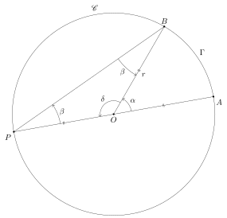
Nous avons tenu compte de la symétrie dans la notation des angles.
Nous allons examiner la relation entre l’angle au centre \(\alpha\) et l’angle inscrit \(\beta\).
Les angles \(\alpha\) et \(\delta\) forment ensemble un angle plat :
\[ \alpha + \delta = 180^\circ \]
Isolons \(\delta\) :
\[ \delta = 180^\circ - \alpha \]
La somme des angles du triangle \(POB\) nous donne :
\[ 2 \ \beta + \delta = 180^\circ \]
En tenant compte des résultats précédents, cette équation devient :
\[ 2 \ \beta + 180^\circ - \alpha = 180^\circ \]
Simplifions les 180° :
\[ 2 \ \beta - \alpha = 0 \]
Isolons \(\alpha\) :
\[ \alpha = 2 \ \beta \]
Ici aussi, l’amplitude de l’angle au centre vaut le double de l’amplitude de l’angle inscrit.
5.4. Synthèse
Lorsque les côtés d’un angle au centre ont les mêmes points d’intersection avec le cercle que les côtés d’un angle inscrit, l’angle au centre vaut toujours le double de l’angle inscrit.
6. Triangle et cercle
6.1. Cercle circonscrit
On dit que le cercle \(\mathscr{C}\) est circonscrit au triangle \(\mathcal{T}\), ou que \(\mathcal{T}\) est inscrit dans \(\mathscr{C}\), si tous les sommets de \(\mathcal{T}\) appartiennent à \(\mathscr{C}\).
6.2. Diamètre comme côté d’un triangle
Le schéma ci-dessous représente un triangle \(ABC\) dont le côté \([A,B]\) est un diamètre du cercle circonscrit \(\mathscr{C}\) :
Nous avons tenu compte de la symétrie dans la notation des angles.
Le côté \([A,B]\) passe donc par le centre \(O\) du cercle \(\mathscr{C}\). Les points \(A\), \(O\) et \(B\) sont donc alignés; ce qui signifie que les angles \(\alpha\) et \(\delta\) forment ensemble un angle plat :
\[ \alpha + \delta = 180^\circ \]
6.2.1. Triangle rectangle
La somme des angles du triangle \(AOC\) nous donne :
\[ \alpha + 2 \ \beta = 180^\circ \]
La somme des angles du triangle \(OBC\) nous donne :
\[ \delta + 2 \ \gamma = 180^\circ \]
En sommant ces deux dernières équations, on obtient :
\[ \alpha + 2 \ \beta + \delta + 2 \ \gamma = 360^\circ \]
Faisons passer \(\alpha\) et \(\delta\) dans le membre de droite :
\[ 2 \ \beta + 2 \ \gamma = 360^\circ - \alpha - \delta \]
ou encore :
\[ 2 \ \beta + 2 \ \gamma = 360^\circ - (\alpha + \delta) \]
En tenant compte de l’alignement de \(A\), \(O\) et \(B\), on obtient :
\[ 2 \ \beta + 2 \ \gamma = 360^\circ - 180^\circ = 180^\circ \]
Mettons les \(2\) en évidence :
\[ 2 \ (\beta + \gamma) = 180^\circ \]
Comme :
\[ \theta = \beta + \gamma \]
notre équation devient :
\[ 2 \ \theta = 180^\circ \]
c’est-à-dire :
\[ \theta = 90^\circ \]
Le triangle \(ABC\) est donc un triangle rectangle.
Nous venons de montrer que tout triangle inscrit dans un cercle et dont un des côtés est un diamètre est un triangle rectangle. Pour construire un triangle rectangle, il suffit donc :
- de tracer un diamètre du cercle
- de choisir un troisième sommet du triangle sur le cercle
- de relier les extrémités du diamètre au troisième somme choisi
6.2.2. Angle inscrit
Les côtés de l’angle inscrit \(\theta\) intersectent le cercle aux mêmes points que les côtés de l’angle au centre \(\angleflex{AOB}\). Comme l’amplitude de ce dernier vaut 180°, on obtient le même résultat que précédemment :
\[ \theta = \frac{180^\circ}{2} = 90^\circ \]
7. Triangles isométriques
7.1. Définition
Deux triangles sont dits isométriques si leur côtés correspondants sont de même longueur et leurs angles correspondants de même amplitude. Le schéma ci-dessous nous en montre un exemple :

avec :
\[ a_1 = a_2 \]
\[ b_1 = b_2 \]
\[ c_1 = c_2 \]
et :
\[ \alpha_1 = \alpha_2 \]
\[ \beta_1 = \beta_2 \]
\[ \gamma_1 = \gamma_2 \]
Remarque : deux côtés ou angles correspondants sont aussi qualifiés d’homologues.
7.2. Notation
Si deux triangles \(T_1\) et T2$ sont isométriques, on le note :
\[ T_1 \cong T_2 \]
Remarque : attention à ne pas confondre le symbole d’isométrie \(\cong\) avec l’égalité approximative \(\approx\) ou \(\simeq\).
7.3. Équivalence
On vérifie aisément que la relation d’isométrie est une équivalence.
8. Triangles semblables
8.1. Définition
Deux triangles sont dits semblables si les rapports de leurs côtés correspondants sont les mêmes, et si leurs angles correspondants de même amplitude. Le schéma ci-dessous nous en montre un exemple :
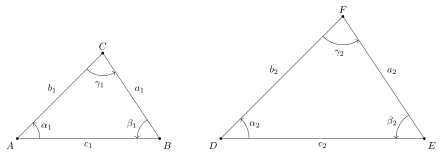
avec :
\[ \frac{a_1}{a_2} = \frac{b_1}{b_2} = \frac{c_1}{c_2} \]
et :
\[ \alpha_1 = \alpha_2 \]
\[ \beta_1 = \beta_2 \]
\[ \gamma_1 = \gamma_2 \]
8.2. Corollaires
Soit la relation :
\[ \frac{a_1}{a_2} = \frac{b_1}{b_2} \]
En multipliant par \(a_2 / b_1\), on aboutit à une autre égalité de proportions :
\[ \frac{a_1}{b_1} = \frac{a_2}{b_2} \]
On obtient par un raisonnement similaire :
\[ \frac{a_1}{c_1} = \frac{a_2}{c_2} \]
et :
\[ \frac{b_1}{c_1} = \frac{b_2}{c_2} \]
Les rapports entre les longueurs des côtés sont les mêmes dans les deux triangles.